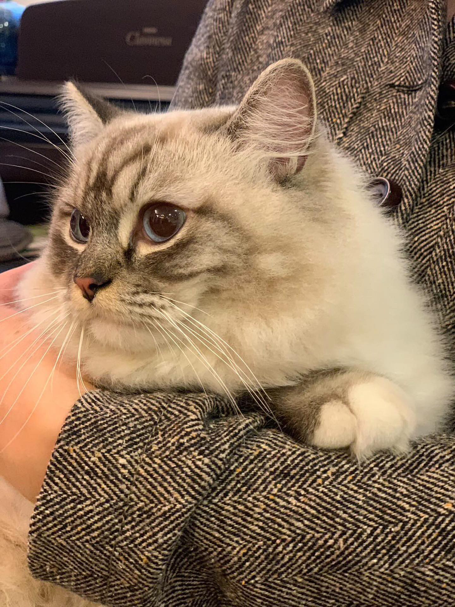

Tiffany's Adventures in Cat Sitting
Published on: 2024-10-21
Look at this gorgeous lady! Tiffany keeps sending me pictures of the Ragdoll cat to show off. It's not even hers—it's her cousin's cat, and she's just taking care of it while they're away.
Despite not being her cat, Tiffany has formed a special bond with this fluffy beauty, and she can't stop sending me the cutest pictures. I had to share this one!